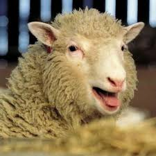

| Дата | События* | Факты* |
|---|---|---|
| 5 июля 1996 года | Рождение | Долли родилась в Великобритании |
| Дано имя | Вначале ей был присвоен только лабораторный идентификационный номер 6LL3 | |
| Апрель 1998 года | Родился первый ягненок Бонни | |
| Осень 2001 года | У Долли был обнаружен артрит | |
| 14 февраля 2003 года | Долли пришлось усыпить | Причиной послужили прогрессирующее заболевание легких и тяжелый артрит |
| 9 апреля 2003 года | Чучело Долли выставлено в Королевском музее Шотландии | |
| Долли стала самой известной овцой в истории науки | ||